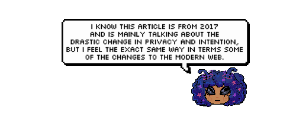
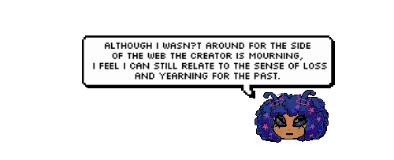
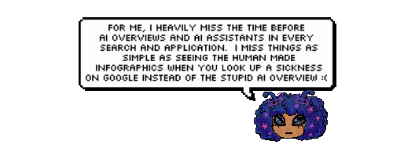
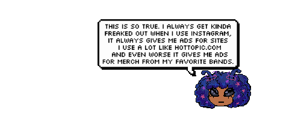
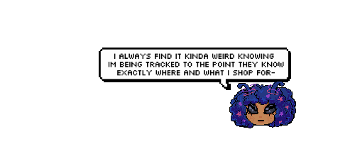
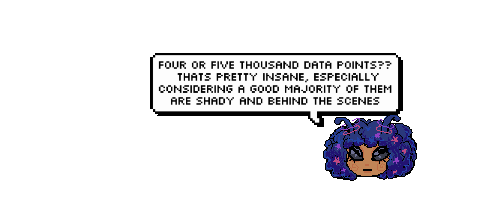
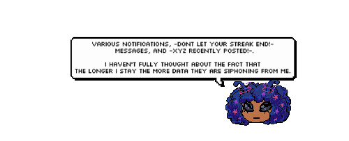

.gif) It seems we've landed!
It seems we've landed! It seems we've landed!

The web enabled that. It's one of humanity's greatest inventions. And now, we the architects of the modern web—web designers, UX designers, developers, creative directors, social media managers, data scientists, product managers, start-up people, strategists—are destroying it.





Today, we are so far from that initial vision of linking documents to share knowledge that it's hard to simply browse the web for information without constantly being asked to buy something, like something, follow someone, share the page on Facebook or sign up to some newsletter. All the while being tracked and profiled.


Trump's 2016 presidential campaign both bought the services of a certain Cambridge Analytica, a company that boasts a gigantic database containing personal details amounting to "close to four or five thousand data points on every adult in the United States" (their own words).

And they do their best to keep you on their website as long as possible. Your attention is worth a lot to a lot of companies who are convinced that traditional advertising is dead and that micro-targeted campaigns work better. (And they mostly do, from their point of view). This drives them to come up with absurd techniques to create addiction: wish your friend happy birthday, wish your colleague a happy work anniversary (who does that?), here's a video we made about you, three friends are going to an event near you, continue watching the video you started even as you scroll, be the first to comment, react to this photo, tell everyone what you're up to. The longer you stay, the more information you give, the more valuable your profile—and the platform—is to advertisers.
